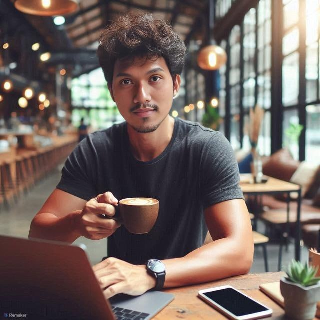

Saya membantu bisnis dan institusi meningkatkan produktivitas melalui website, video, sistem IT, dan otomasi berbasis AI.

Satu partner untuk kebutuhan teknis dan kreatif bisnis Anda — dikerjakan rapi, terdokumentasi, dan berorientasi hasil.
Konten promosi, company profile, reels, dan video pembelajaran.
Website company profile, landing page, dan dashboard sederhana.
Otomatisasi laporan, dokumen, dan workflow kerja.
Troubleshooting, jaringan, Mikrotik, dan infrastruktur IT.
Instalasi, monitoring, dan migrasi sistem CCTV.
Desain antarmuka modern yang nyaman digunakan.
Proyek nyata dengan dampak terukur pada operasional dan efisiensi.
Jaringan dan sistem digital tersebar di banyak unit tanpa integrasi terpusat.
Integrasi jaringan, monitoring terpusat, dan workflow digital yang terotomasi.
Operasional lebih stabil, efisien, dan mudah dipantau setiap saat.
Kombinasi tools IT, kreatif, dan otomasi untuk hasil yang cepat dan andal.
Bukan sekadar teknis — saya berpikir dari sisi bisnis dan hasil.
Memahami kebutuhan bisnis, bukan hanya teknis
Pengalaman menangani infrastruktur nyata
Mampu menggabungkan IT + desain + AI
Komunikasi profesional dan responsif
Fokus pada efisiensi dan hasil
Dokumentasi dan maintenance yang rapi
Kepercayaan yang dibangun dari hasil kerja nyata.
“Ari sangat teliti dan cepat tanggap. Sejak infrastruktur IT ditangani beliau, jaringan kami jauh lebih stabil dan jarang bermasalah.”
“Otomasi laporan yang dibuat Ari memangkas pekerjaan administrasi kami secara drastis. Sangat membantu efisiensi tim.”
“Hasil video dan desainnya profesional dan sesuai brief. Komunikasinya enak, revisinya cepat. Recommended.”
Saya siap membantu membangun website, video, sistem IT, dan solusi AI yang meningkatkan profesionalisme serta efisiensi bisnis Anda.